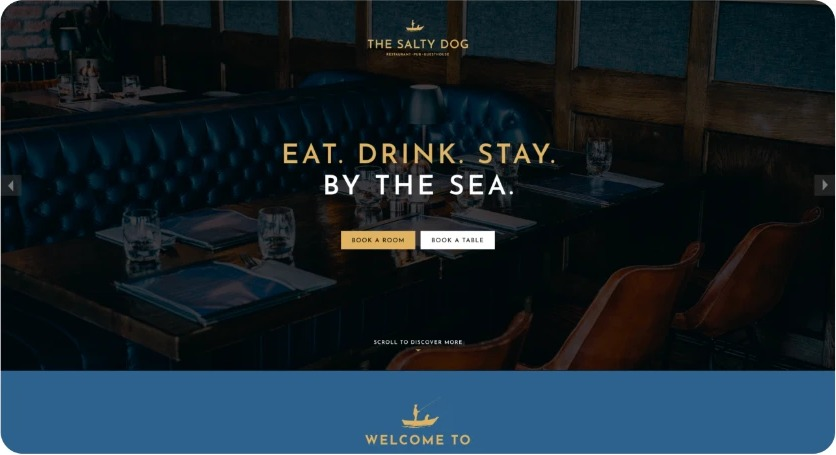
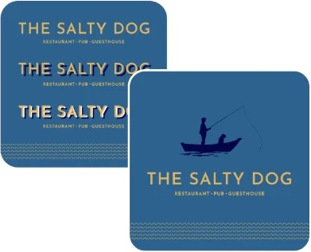
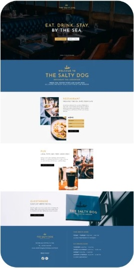
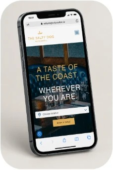

The Salty Dog
Branding & Website for brand new Irish Restaurant
The Salty Dog is a new restaurant based in Ireland, requiring a distinctive brand identity that would establish its presence and communicate a refined, classy dining experience from the outset.
The Plan
To develop a complete brand identity from scratch, creating a cohesive visual language that captured the restaurant’s character and could be applied consistently across digital and print touchpoints.

Brand Creation & Guidelines
I designed a bespoke logo featuring a fisherman and his dog in a boat, establishing a distinctive visual identity. I developed comprehensive brand guidelines covering colour palettes, typography and imagery, then designed and built a new website to coincide with the restaurant’s launch.
To ensure consistency across every customer touchpoint, I also created social media graphics, menus and a range of supporting printed materials.


Result
The project delivered a complete, cohesive brand identity and digital presence for The Salty Dog’s launch. From the website and social media to menus and printed collateral, every element worked together to establish a recognisable, premium brand experience.